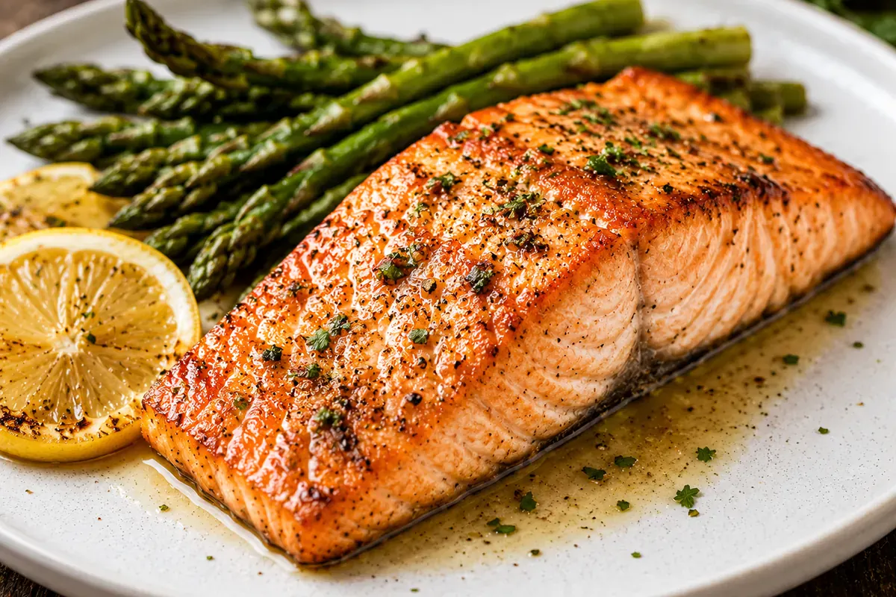

Garlic Herb Grilled Salmon

Salmon on the grill takes about ten minutes and rewards almost no effort. A quick marinade of olive oil, garlic, rosemary, thyme and lemon gives the fish a savoury crust, and the flesh stays pink in the middle if you pay attention to timing rather than the clock on the wall.
Four six-ounce fillets serve four. The recipe works on an outdoor grill or a stovetop grill pan, so it is not limited to summer.
Ingredients
- 4 salmon fillets (about 6 oz each)
- 2 tbsp olive oil
- 3 cloves garlic, minced
- 1 tbsp fresh rosemary, finely chopped
- 1 tbsp fresh thyme leaves
- 1 lemon (half sliced into rounds, half juicy for squeezing)
- Salt and black pepper to taste
Instructions
- Preheat your grill or a stovetop grill pan to medium-high heat. Lightly oil the grates to prevent sticking.
- In a small bowl, mix together the olive oil, minced garlic, chopped rosemary, and thyme leaves.
- Pat the salmon fillets dry with a paper towel. Season both sides generously with salt and black pepper, then brush the garlic herb mixture evenly over the flesh side of the salmon.
- Place the salmon on the grill, skin-side down first. Grill undisturbed for about 4-5 minutes until the skin is crispy and easily releases from the grates.
- Carefully flip the fillets over to the flesh side. Grill for another 3-4 minutes, or until the salmon is opaque throughout and flakes easily with a fork.
- Remove the salmon from the grill. Squeeze fresh lemon juice over the top, garnish with the lemon slices, and serve hot!
Why this recipe works
Oiling the grates and the fish, rather than the pan, is what prevents sticking. Salmon is also better cooked skin-side down first, which protects the delicate flesh and gives the skin a chance to crisp before the fish is flipped or simply finished skin-side down.
Tips for success
- Pat the fillets dry and oil them lightly before they meet the grill.
- Start skin-side down over direct heat and keep the lid closed so the fish cooks through evenly.
- Pull the salmon when the thickest part flakes but still looks glossy inside, around 125 to 130 F for medium.
Substitutions that work
- Arctic char or trout cook in almost the same way and are good alternatives.
- Dried herbs work in a pinch: use a teaspoon each of dried rosemary and thyme.
- For a foil packet version, wrap the salmon with the herbs and lemon and bake at 400 F for fifteen minutes.
Storage and make-ahead
Refrigerate leftover salmon for two days. It is good cold, flaked into a salad or mixed into pasta, and reheats gently in a low oven or a covered pan to avoid drying it out. Do not microwave it on high.
Serving suggestions
Serve with Greek lemon potatoes, a green salad or steamed vegetables, and extra lemon on the side. A spoonful of yogurt mixed with herbs makes an easy sauce.
Frequently asked questions
How long does salmon take on the grill?
About four to five minutes skin-side down over medium-high heat, then two to three minutes on the other side for a one-inch fillet. Thicker pieces need a little longer.
How do I stop salmon sticking to the grill?
Clean and oil the grates, oil the fish, and do not move it until it releases on its own. A grill basket or a cedar plank also works.
Can I cook this in the oven instead?
Yes. Bake at 400 F for twelve to fifteen minutes on a lined tray, or until the fish flakes at the thickest point.